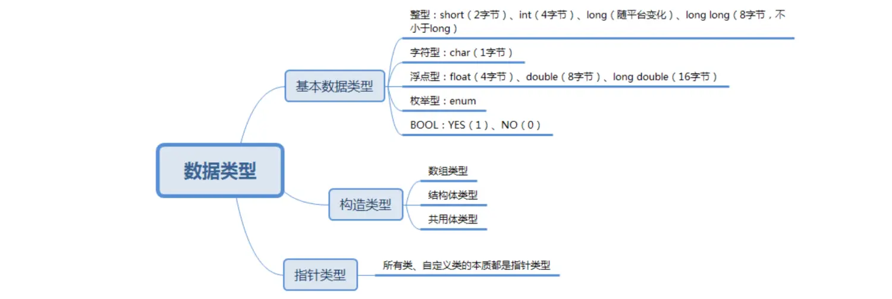

① 基本数据类型
-
C语言基本数据类型（如
short、int、float等）在OC中都不是对象，只是一定字节的内存空间用于存储数值，他们都不具备对象的特性，没有属性方法可以被调用。 -
OC中的基本数据类型：
NSInteger(相当于long型整数)、NSUInteger(相当于unsigned long型整数)、CGFloat(在64位系统相当于double，32位系统相当于float)等。- 他们并不是类，只是用
typedef对基本数据类型进行了重定义，他们依然只是基本数据类型。 - **枚举类型：**其本质是无符号整数。
- **BOOL类型：**是宏定义，OC底层是使用signed char来代表BOOL。
② 指针数据类型
指针数据类型包括： 类class、id。
- 类class：
NSString、NSSet、NSArray、NSMutableArray、NSDictionary、NSMutableDictionary、NSValue、NSNumber(继承NSValue)等，都是class，创建后便是对象，继承NSObject。
OC中提供了NSValue、NSNumber来封装C语言的基本类型，这样我们就可以让他们具有面向对象的特征了。
- id：
id是指向Objective-C对象的指针，等价于C语言中的void*，可以映射任何对象指针指向他，或者映射它指向其他的对象。常见的id类型就是类的delegate属性。
集合NSSet和数组NSArray区别：
- 都是存储不同的对象的地址；
- 但是NSArray是有序的集合，NSSet是无序的集合，它们俩可以互相转换。
- NSSet会自动删除重复元素。
- 集合是一种哈希表，运用散列算法，查找集合中的元素比数组速度更快，但是它没有顺序。
③ 构造类型
**构造类型包括：**结构体、联合体
- 结构体：
struct，将多个基本数据类型的变量组合成一个整体。结构体中访问内部成员用点运算符访问。 - 联合体(共用体)：
union，有些类似结构体struct的一种数据结构，联合体(union)和结构体(struct)同样可以包含很多种数据类型和变量。
结构体和联合体的区别：
-
结构体(
struct)中所有变量是“共存”的，同一时刻每个成员都有值，其sizeof为所以成员的和。**优点：**是“有容乃大”，全面；
**缺点：**是struct内存空间的分配是粗放的，不管用不用，全
分配，会造成内存浪费。
-
联合体(
union)中各变量是“互斥”的，同一时刻只有一个成员有值，其sizeof为最长成员的sizeof。**优点：**是内存使用更为精细灵活，也节省了内存空间。
**缺点：**就是不够“包容”，修改其中一个成员时会覆盖原来的成员值；